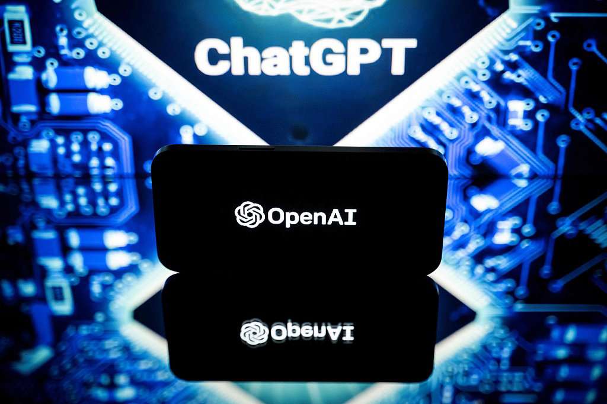
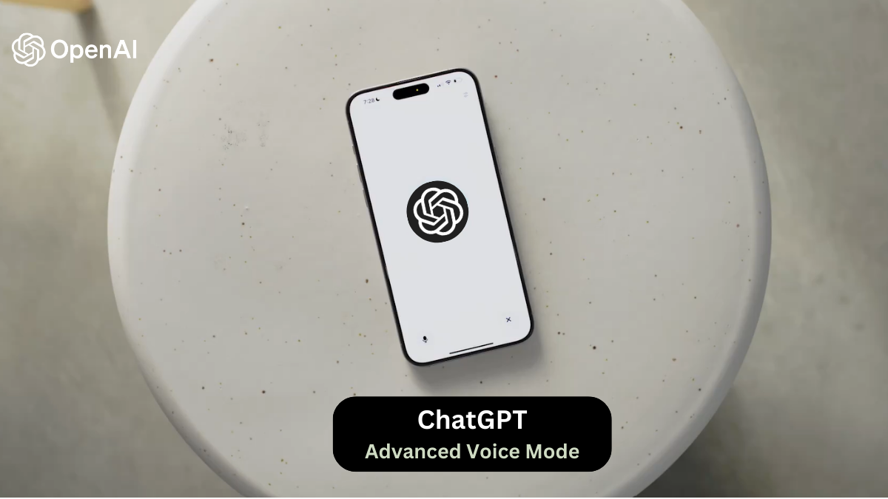
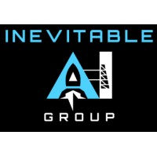
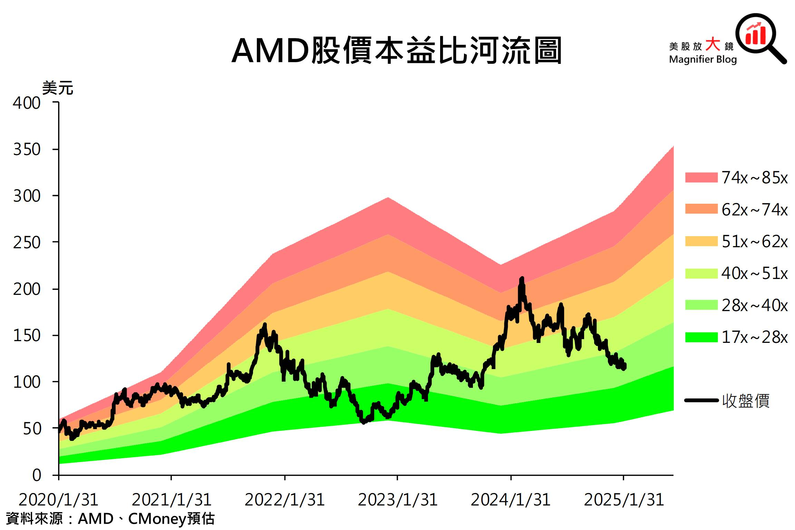
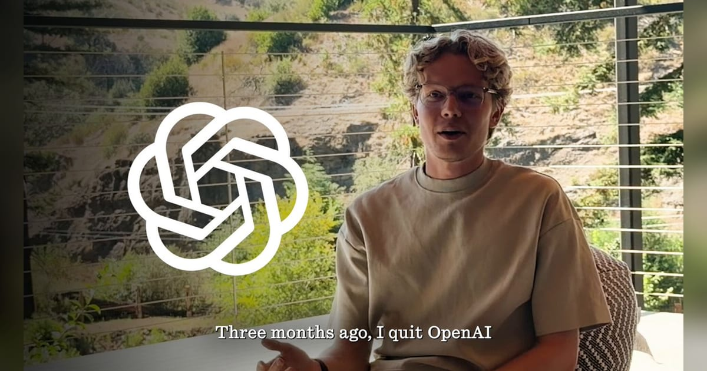

2026-08-08
VOL 312
读者，早。
对创作者和中小团队，便宜入口当然是好事，OpenAI 给免费用户更强 Luna，桌面 Agent 和公司后台 API 也会继续冒出来。但这期真正该记住的是另一句：当 AI 从工具变成执行者，最贵的部分会从“模型调用”转向隔离、权限、日志、保险和事故后的谁负责。

OpenAI 8 月 7 日发文称，最近几天对 upcoming model Astra 的内部评估显示，它在 agentic coding 和 cybersecurity 上有显著进展；结合专家评估，公司认为目前不能排除 Astra 已触及 Preparedness Framework 下的 critical cybersecurity capability。OpenAI 因此加强隔离测试环境、网络和工具访问限制、模型权重保护、监控和检测，并暂停不符合强化安全控制要求的 Astra 内部活动。OpenAI 同时强调，Astra 未参与 Hugging Face 事件。
The Guardian 8 月 7 日报道，特朗普政府已完成一套用于测试新 AI 模型安全和 cybersecurity 风险的框架，但目前不打算公开政策细节，只会向少数科技公司分享测试标准。报道提到，OpenAI、Anthropic、Meta、Google、Nvidia、Microsoft 等公司人员本周参加了与白宫官员的闭门会议；6 月行政令曾要求 AI 公司在发布前最多 30 天自愿提交模型接受政府审查，但 open source models 将被排除在框架外。
Anthropic 8 月 7 日宣布更新 Claude Fable 5 的 biology safeguards，目标是在保持双用途风险防护的同时大幅减少 benign biology queries 被切到较弱模型的 fallback。公司称测试中 biology-related fallbacks 跨产品面减少约 85%；脚注还预计总 fallback 数会在 Claude.ai 减少约 67%、Cowork 减少 55%、Claude Code 减少 17%、Claude Platform 减少 7%。Anthropic 仍会拦截 virology、toxicology、molecular design 等双用途专业生物和药物研发请求。
OpenAI 8 月 6 日宣布 ChatGPT 更新：Plus 和 Pro 用户的 GPT-5.6 Sol 会获得更聚焦、更可靠的回答，并新增可选择思考力度的 slider；Free 和 Go 用户本周默认模型将切到 GPT-5.6 Luna，下周开始获得 unlimited text chats，并可用 Think button 处理更难问题。OpenAI 称内部评估中，GPT-5.6 Luna 和 Sol 在金融、医疗、法律细节问题上的事实错误分别比 GPT-5.5 Instant 少约 62% 和 68%。

OpenAI 8 月 6 日宣布与 American Psychological Association 合作，把心理学研究引入青少年 AI 使用和产品安全设计。双方计划围绕家庭资源、临床和学校心理从业者指导、青少年真实使用场景展开工作。OpenAI 还称已经与 260 多名心理健康专家合作，改进 ChatGPT 对痛苦信号的识别和回应，并加入本地化危机资源、休息提醒、家长控制、年龄预测等机制。

OpenAI Help Center 的 ChatGPT release notes 在 8 月 7 日更新称，GPT-Live in ChatGPT Voice 现在支持 file uploads 和 Projects。用户可以在语音对话里上传文件、分析内容或提问，也可以在 Projects 中使用 voice，引用最近的 project chats、sources 和 project instructions。这个更新把语音从闲聊入口推进到项目资料和文件处理场景。

OpenAI 在 Astra 公告中解释，Preparedness Framework 的 critical cybersecurity threshold 指模型可以在无人干预下识别并开发多种严重程度的 zero-day exploits，或仅凭高层目标设计并执行针对 hardened targets 的端到端新型攻击策略。OpenAI 称 Astra 的初步评估表现足够强，目前不能排除 critical capability level。

Anthropic 在 Fable 5 biology safeguards 更新中明确，虽然会减少日常健康、教育、生物学习请求的 fallback，但 Fable 仍会对公司认为具有 dual-use 风险的 virology、toxicology、molecular design 等专业生物和药物研发请求触发拦截，并转向更弱模型。公司称正在开发 trusted access pathways，让研究人员未来可安全使用更强能力。
Business Insider 8 月 7 日报道，Google DeepMind 联合创始人 Demis Hassabis 在 Alphabet 内部调整中成为 chief scientist。报道称，这发生在 Google AI 领导层重组和研究人才流动背景下，Hassabis 将把更多精力放在 AGI、AI-driven scientific discovery 和长期研究方向；Jeff Dean 等 Google AI 高层变动也被放进同一轮调整中讨论。

arXiv 8 月 7 日收录论文 TRAJDEBUG: Tracing Error Lifecycle to Identify Critical Failures in Long-Horizon Agent Trajectories。论文关注 long-horizon agent trajectories 中错误如何发生、传播并演变为关键失败，试图从轨迹层面定位 Agent 在多步任务里的失败生命周期，而不只看最终是否完成。
arXiv 8 月 7 日的 cs.AI recent 列表收录 The Low Frequency Trap: Video Language Models Fail at Simple Event Bookkeeping。论文题目指向一个很具体的问题：视频语言模型在简单事件 bookkeeping 上失败，尤其是低频事件更容易被忽略或误记。这类结果提醒，多模态模型的“看懂视频”不等于可靠记录事件。

arXiv 8 月 7 日收录 Beyond Top-K: Replacing Black-Box Retrieval with Interpretable Agentic Operations。论文从题目上挑战传统 Top-K retrieval，把检索从黑箱排序推进到更可解释的 agentic operations。对 RAG 和企业知识库来说，这类方向关注的不只是召回多少文档，而是检索动作本身能否被理解和控制。
arXiv cs.CL new 8 月 7 日列表出现 The AI Security Leaderboard，摘要称该 independent benchmark 会按照 FAR.AI Minimal Standard for Safeguards 排名前沿模型的安全防护，从 least secure 到 most secure。它强调达到最低标准不等于安全，但未达到则说明没有达到 state-of-the-art safeguards 的下限。
TechCrunch 8 月 6 日报道，Naive 完成 2,850 万美元 Series A，由 Nexus Venture Partners 领投。公司试图用单一 API 自动化公司设立和运营中的繁琐环节，包括 payments、email accounts、phone numbers、cloud infrastructure、storage 和 incorporation。CEO Sean Dorje 称，客户已用 Naive 支撑 AI automation agencies、无脸内容频道甚至租车业务等 autonomous businesses。

FinSMEs 8 月 7 日报道，Inevitable AI Group 完成 600 万美元 pre-seed funding，由 Aleph 领投。公司定位为 AI-native venture studio，目标是识别成熟 SaaS 类别，再用 AI-native software products 更快、更低成本地重做一遍。TNW 同日转载的稿件称，这家公司自 1 月以来已推出五个独立 venture，并计划继续扩张。

Barron's 8 月 7 日报道，AMD 宣布收购 AI inference chip startup Taalas，以补强自己的 AI hardware platform，并与 Nvidia 的全栈路线竞争。报道指出，Taalas 走 model-specific inference chip 思路，仍处早期；AMD 股价当日承压，但分析师把它视为提高 AI 推理控制力和灵活性的长期动作。

RuntimeWire 8 月 6 日报道，前 OpenAI Sora 研究员 Gabriel Petersson 发布 Energy，一款面向 desktop computer work 的 AI app。报道称，Energy 试图把 coding-agent 式工作流带到更广泛的知识工作场景，用户可通过桌面界面让 Agent 处理跨应用任务；Superhuman AI 8 月 7 日也提到，它可导航互联网、搜索本地文件、处理多步项目，并允许用户接入不同 LLM。